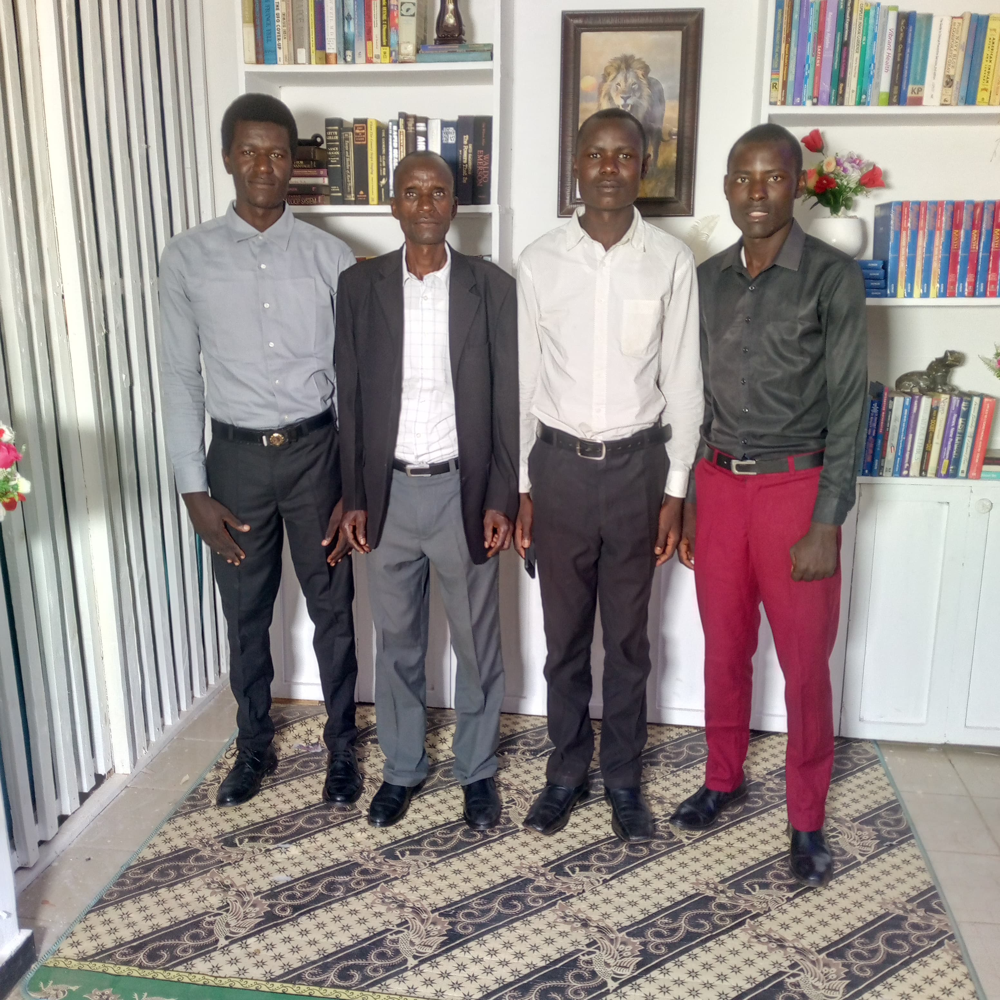
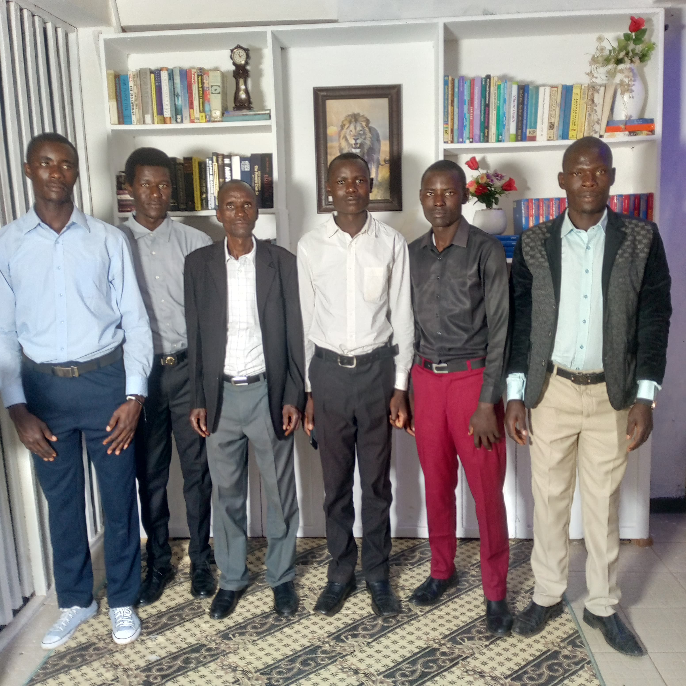
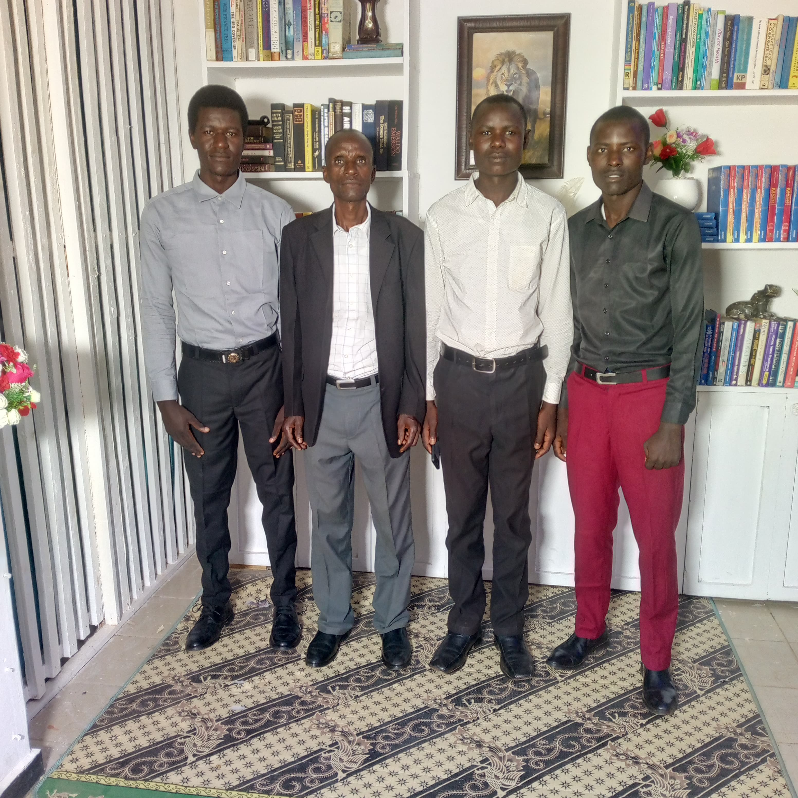
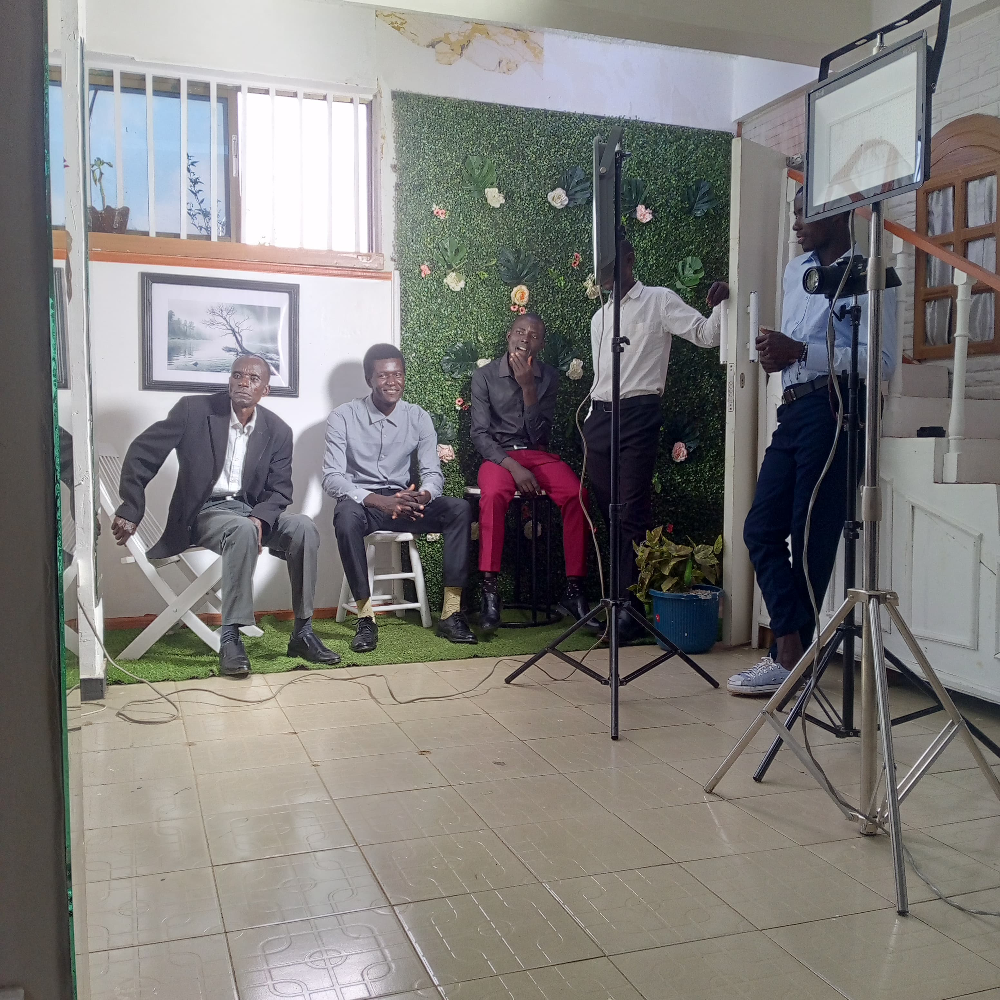
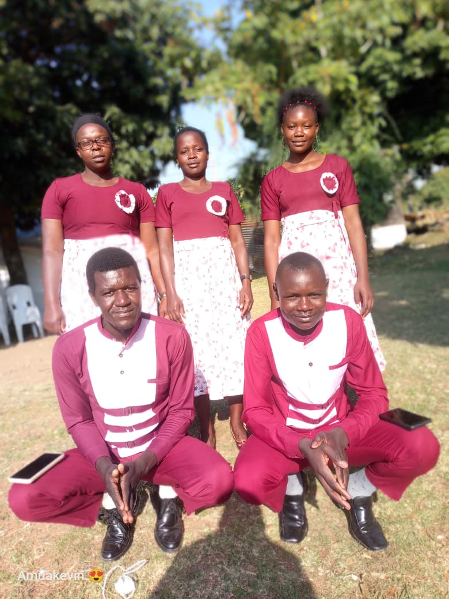
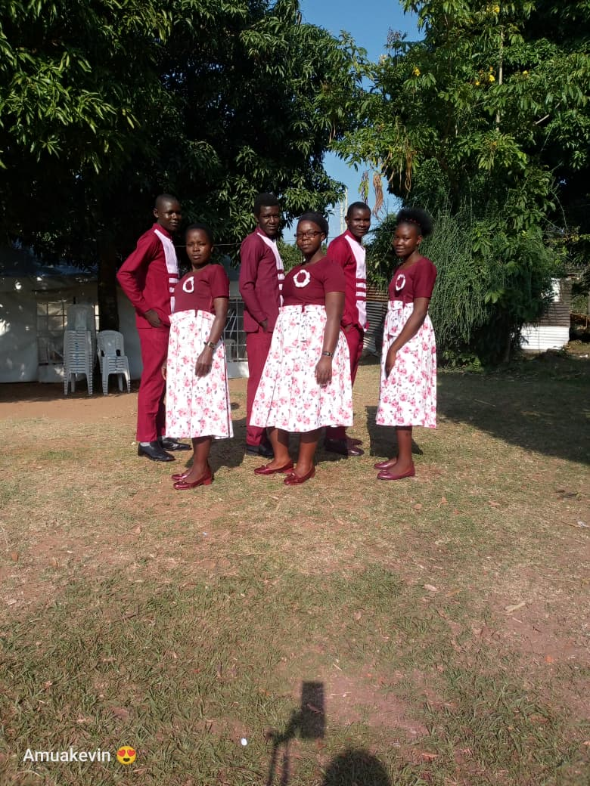
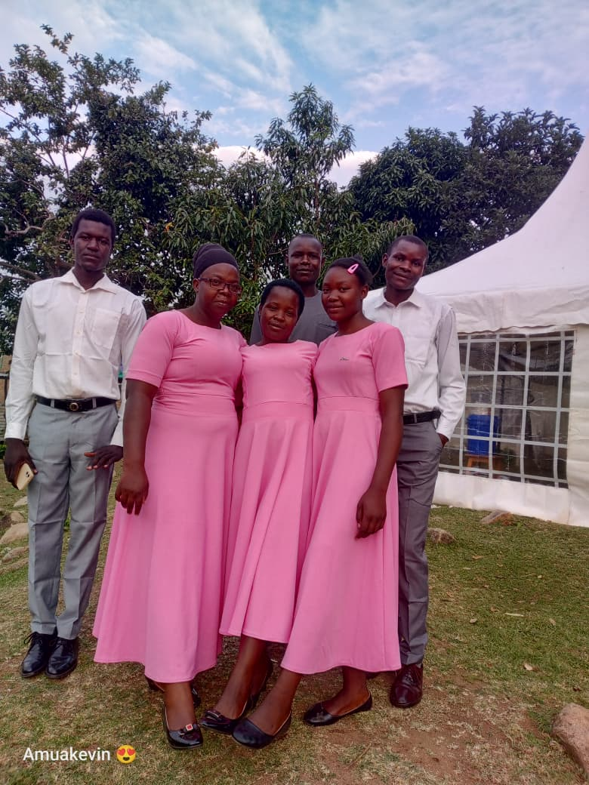
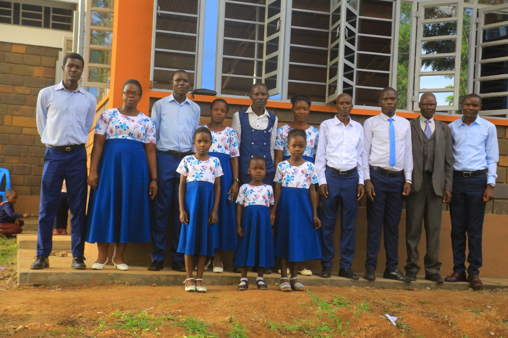
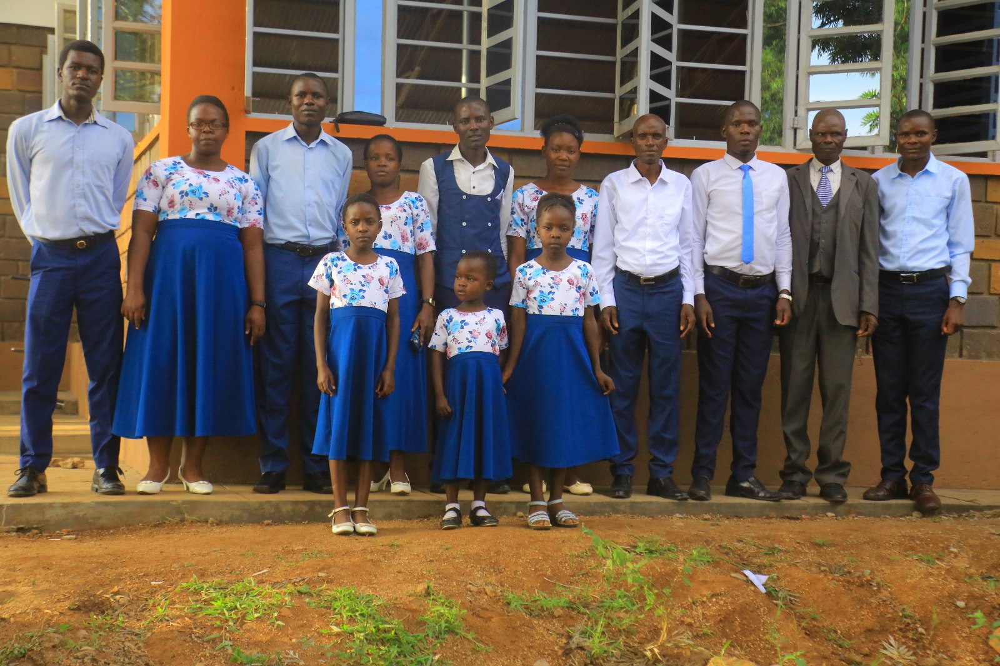
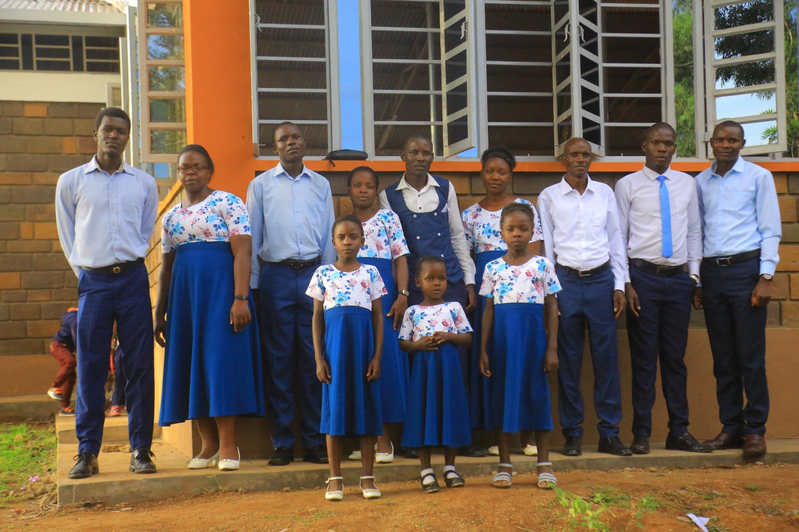

Welcome to Mori SDA Youth Choir
"Praising God Through Music and Service"
Who We Are
Mori SDA Youth Choir is a dedicated music ministry under the Seventh-day Adventist Church. We are a group of young people committed to glorifying God through sacred music, worship, and community outreach. Our mission is to use music as a tool for evangelism and spiritual growth.
Our Purpose
The choir exists to uplift Christ, inspire worship, and prepare hearts for the Second Coming. Through song, we encourage faith, unity, and service among youth and the wider church community.
Weekly Activities
🙏 Sabbath Worship
We lead worship every Sabbath through hymns and sacred songs.
🎵 Choir Practice
Regular rehearsals with vocal training to sharpen musical excellence.
🤝 Community Outreach
Spreading hope and love beyond the church walls through outreach programs.
🎤 Special Music Events
Concerts, festivals, and evangelistic meetings throughout the year.









